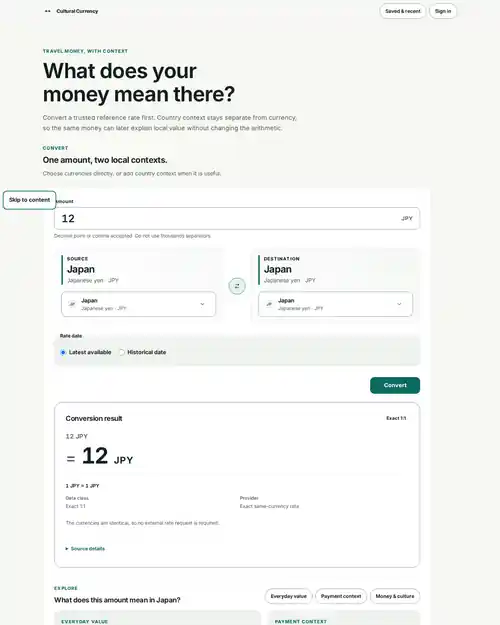

I build Python/Django backends,
integrations, and data-heavy products.
A lot of my work sits between systems: CRM data, external APIs, search,
documents, and the UI people use to make sense of it. Python/Django is my
main stack, but I am comfortable finishing the frontend too.
Most of my current work is in the Bo product: Django backend, CRM and
property data, external integrations, search, document flows, and the UI
around them.
~200k
CRM/contact records reconciled across Kivi, OviPro, and HubSpot
3.5s → ~300ms
Before3.5s
After0.3s
One search path after reworking queries, loading, and caching
~1,600
Duplicate assignment records resolved, with stricter ingestion rules
Built CRM reconciliation around ~200k contacts across
Kivi, OviPro, and HubSpot. Ambiguous identity matches go to review instead
of being merged automatically.
Cut one search path from 3.5s to ~300ms by changing
the query structure, relationship loading, candidate limits, and caching.
Cleaned up ~1,600 duplicate assignment records and
tightened the ingestion rules so the same problem would not simply return
on the next sync.
2023 — 2025
Earlier software roles
Duotone · BearIT / Nidos · Freelance
Software Developer · DuotoneFeb — May 2025Next.js and TypeScript SaaS features, PostgreSQL/Supabase workflows, search prototypes.
Trainee · BearIT LearnIT, incl. internship at Nidos Ltd.Mar — Nov 2024Full-stack Next.js/tRPC/Prisma training; at Nidos, React CRM screens with Playwright E2E tests.
Frontend Developer · UpworkJul 2023 — Mar 2024React interfaces and REST API integrations for freelance clients.
Before software
Business & operations
Agriculture, sales, accounting, and production
Before software I spent more than eight years around agriculture,
greenhouse and food production, accounting, sales, and customer work.
That is useful context when software has to fit an actual business process.
About
Most of my interesting work starts when two systems disagree.
At work that usually means tracing a record through several systems,
deciding which source is authoritative, and fixing the part of the flow that
actually caused the bad state instead of patching what appeared on screen.
I also build the UI when it is part of the same feature. I tend to choose
boring, familiar tools unless there is a clear reason not to, and I like tests
that prove the failure case as well as the happy path.
Interactive · illustrative data
One customer, three systems
The same person often arrives from Kivi, OviPro, and HubSpot with different
spellings, formats, and timestamps. Run the steps to see the records get
normalised, matched, and merged — and why one of them goes to review instead.
01 Normalise
02 Match
03 Merge
04 Review
Three records matched on normalised email and phone and were merged.
One record with the same name but a different email and phone went to review.
Kivi Matched
Name
Aino Virtanen
Email
aino.virtanen@example.com
Phone
+358 40 123 4567
Updated
14 Aug 2026
OviPro Matched
Name
Aino Virtanen
Email
aino.virtanen@example.com
Phone
+358 40 123 4567
Updated
2 Sep 2026
HubSpot Matched
Name
Aino Virtanen
Email
aino.virtanen@example.com
Phone
+358 40 123 4567
Updated
20 Sep 2026
HubSpot Conflict
Name
Aino Virtanen
Email
a.virtanen@example.net
Phone
+358 50 765 4321
Updated
21 Sep 2026
Golden record 3 sources
Appears after the merge step
Name
Aino Virtanen 3/3 agree
Email
aino.virtanen@example.com match key
Phone
+358 40 123 4567 match key
Updated
20 Sep 2026 latest · HubSpot
Review queue 1
Records that only look alike wait here for a person
Aino Virtanen · HubSpot
Same name, but email and phone disagree with the golden record.
A person decides — the system does not merge on name alone.
A Django travel-money app where the tricky part is not the arithmetic.
Current and historical rates need the right source and effective date,
and the basic conversion still has to work if optional AI or media fails.

Current interface from the real Django application.
A Django household app where pantry, recipes, shopping, and recurring
tasks share data. The interesting part is keeping those flows consistent
without copying the same state into several features.
A Turku transit PWA using GTFS/SIRI. It deals with stale live data,
repeated stops, poor GPS, offline use, and the awkward question of whether
a departure time is actually live or only scheduled.
A Finnish rail booking demo where a seat can be free on one route segment
and occupied on another. A database constraint, not just UI logic, protects
against two users booking the same segment at the same time.
A shopping-budget PWA that works offline. Prices use integer minor units,
saved data is versioned, and barcode/OCR/image recognition can suggest a
value but cannot silently put it into the cart.
A comparison tool for decisions with several criteria. Score, confidence,
and sensitivity stay separate, so a weak assumption does not disappear
inside one impressive-looking number. AI can prepare inputs, not decide the winner.